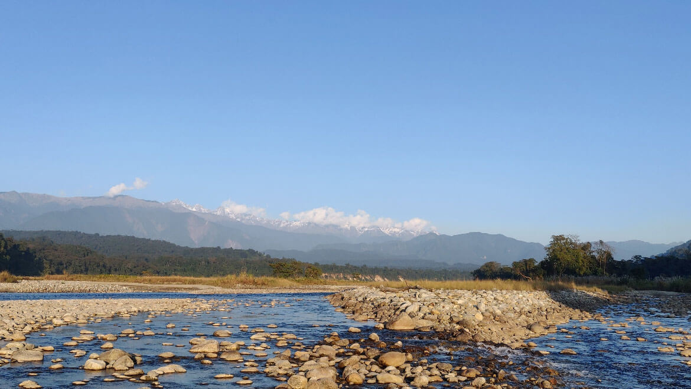

Top Attractions
-
Tawang Monastery
Tawang Monastery is the largest monastery in India and the second largest in the world. It is a significant center of Mahayana Buddhism and offers stunning views of the surrounding mountains.
-
Namdapha National Park
Namdapha National Park is a biodiversity hotspot and home to a wide variety of flora and fauna. It is a haven for wildlife enthusiasts and bird watchers.
-
Bomdila

Bomdila offers panoramic views of the Himalayan ranges and is known for its apple orchards, Buddhist monasteries, and vibrant local culture.
-
Ziro Valley
Ziro Valley is famous for its picturesque landscapes, rice fields, and the annual Ziro Music Festival. It is a perfect destination for those seeking tranquility and natural beauty.